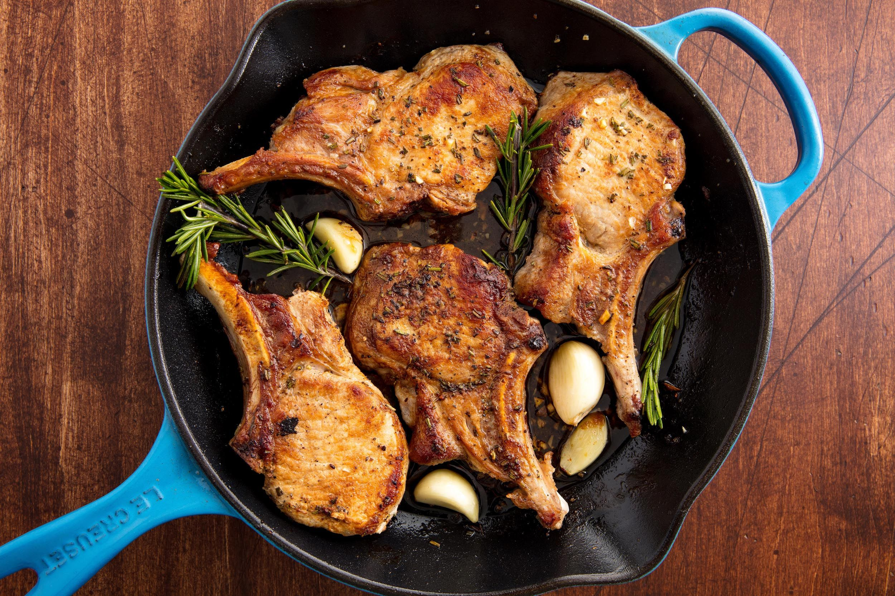

Pork Chops

Description
This is a delicious Pork chop recipe
Ingredients
- Pork chops
- Salt
- Galic Powder
- Cream of Mushroom Soup
- Eggs
- Olive oil
- Milk
- White wine
- Italian Bread Crumbs
Steps
- Preheat oven to 350 degrees F.
- Rinse pork chops, pat dry, and season with garlic powder and seasoning salt to taste.
- Place the beaten eggs in a small bowl. Dredge the pork chops lightly in flour, dip in the egg, and coat liberally with bread crumbs.
- Heat the oil in a medium skillet over medium-high heat. Fry the pork chops 5 minutes per side.
- Bake in preheated oven for 1 hour. Combine with cream of mushroom soup
- Bake for another 30 minutes
Back to Top